Finding ideas worth telling
- Where good ideas come from in everyday life
- How to test whether an idea is strong
Live · Online · Hinglish · Sun, 22 Nov
Storytelling 101: a 4-hour live workshop to make reels and YouTube videos people watch till the end.
Live on Zoom
12 to 4 PM IST · Live on Zoom · Recording + certificate
Raat ko bistar pe, ek hi kahani, baar baar. Koi phone nahi dekh raha tha. Sab sunte hue bade hue hain.
We all grew up on stories. Somewhere along the way, our content forgot how to tell them. People scroll past a hundred videos a day, but they remember the one that told a story. Faces get forgotten. Stories stay.
Bachpan mein sabne kahaniyan suni hain. Ab sunane ki baari aapki hai. This workshop shows you how to be that one video.
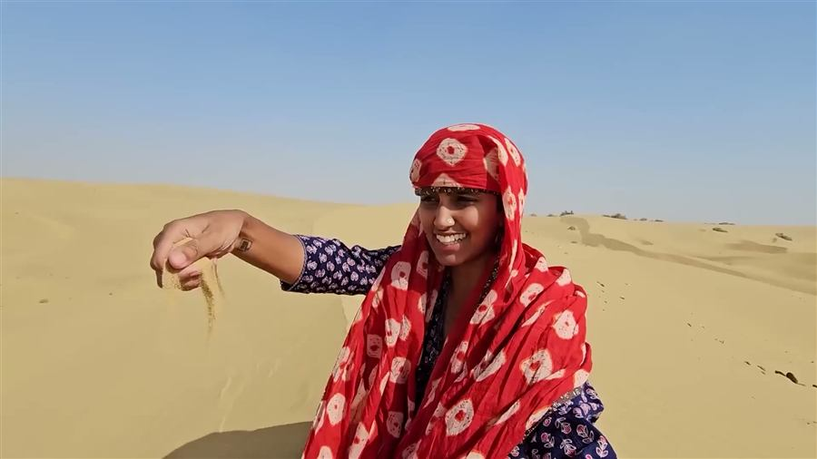
And we want everyone to be able to tell the stories that matter to them. By telling stories the right way, we’ve reached:
These are a few of the stories we’ve told on YouTube, and the people who watched them.
We can turn anything into a story. Even a room. “Inside Mumbai’s smallest rooms” is about a few square feet of space, and 3.3M people watched it.
Brands love our storytelling
That’s why we’re bringing you Storytelling 101, a live workshop to make your content the right way.
An inside look at 5 successful reels, broken down into their hooks, scripts, storytelling structures and key takeaways, so you can use the same techniques in your own content.
₹2,500 Free with your seat
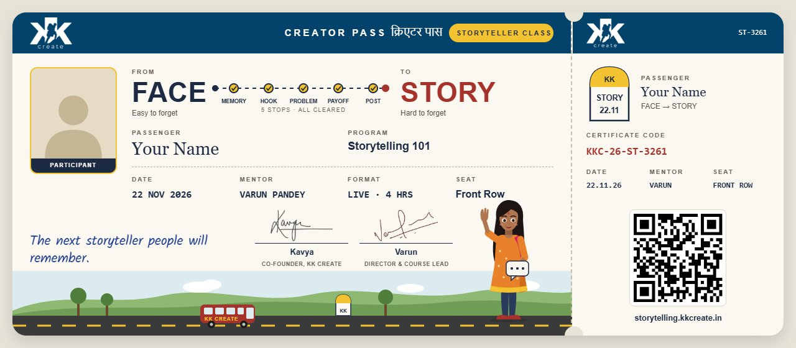
Unscripted · straight from WhatsApp
Some students don’t send us a line after a workshop. They send a voice note. These two came to us on WhatsApp. Press play and hear them.
Tap play to listen
I genuinely learned so much. You explained everything with such clarity. You truly inspire me to create more confidently!
 Shreya Bali
Shreya BaliThanks for the knowledge, Kavya di. I loved today’s workshop. I will definitely follow your ideas to grow and improve.
 Ayushi Singh
Ayushi SinghIt was truly amazing, sending love from Canada. I got so much clarity on how to get started. God bless the whole team. Great work!
 Prabhdeep Singh
Prabhdeep SinghIt was a wonderful session for me. I’m a beginner in this field, and I learned so much. Thank you, KK Create!
 Abhinav Verma
Abhinav VermaGreat workshop! Learned a lot about content creation, strategy and audience engagement. Very informative and well-organised session.
 Rahul Kumar
Rahul Kumar
Varun has over six years of experience in content creation. He helped grow Civic Studios’ social media to 100k+ followers and co-created Pop Culture Patrol with Sucharita Tyagi, reaching millions of views and receiving praise from the likes of Karan Johar and Anurag Kashyap.
At KK Create, he set up the long-form video vertical with Kavya and helped grow the team from 7 to 40+ people. Today he leads the course vertical, mentoring new creators.
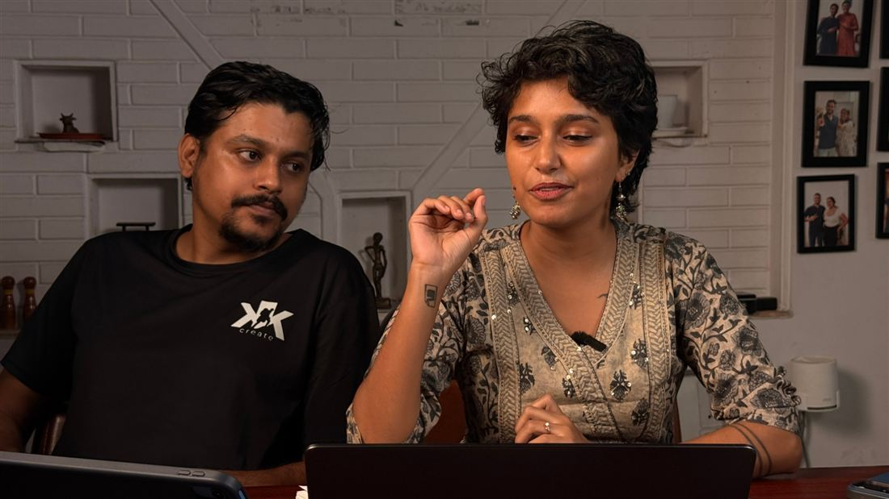
Kavya Karnatac, founder of KK Create, joins the live Q&A.
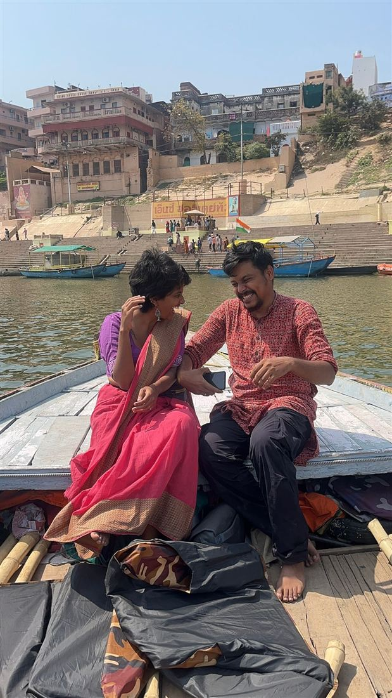
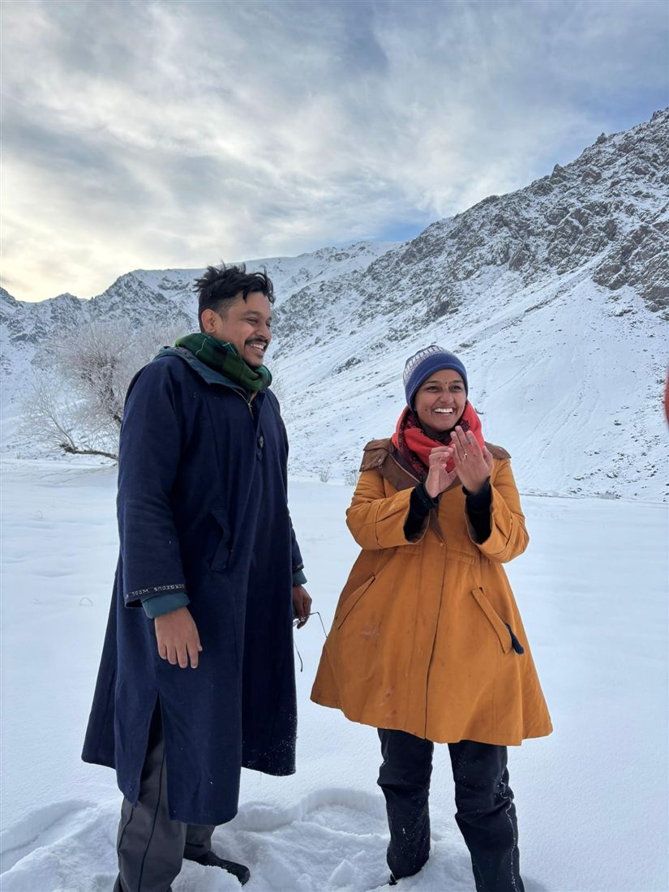
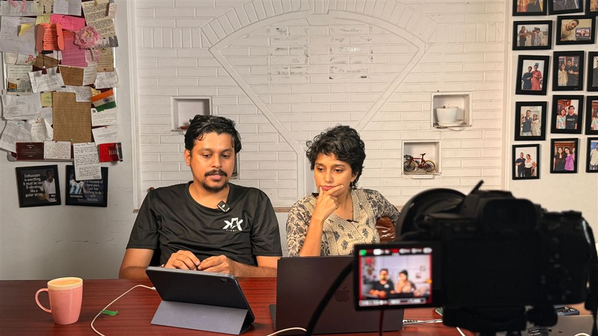
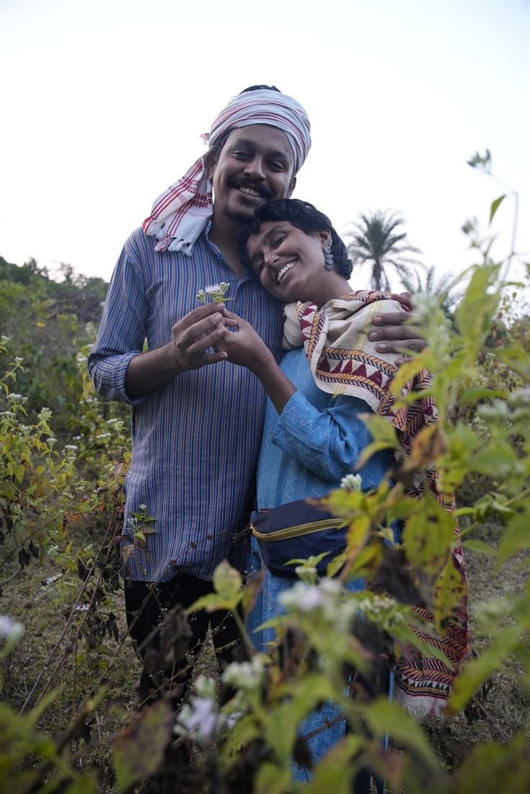
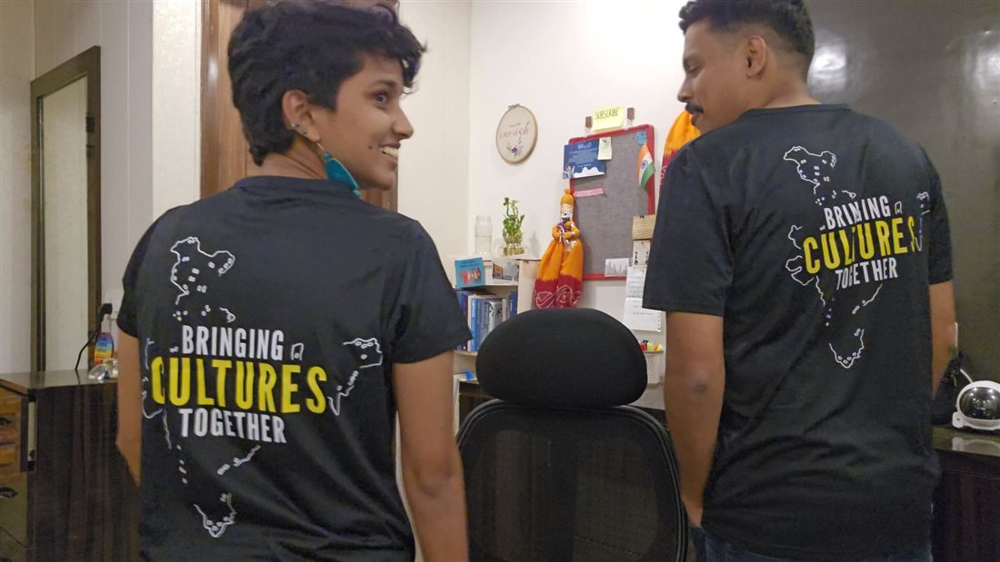
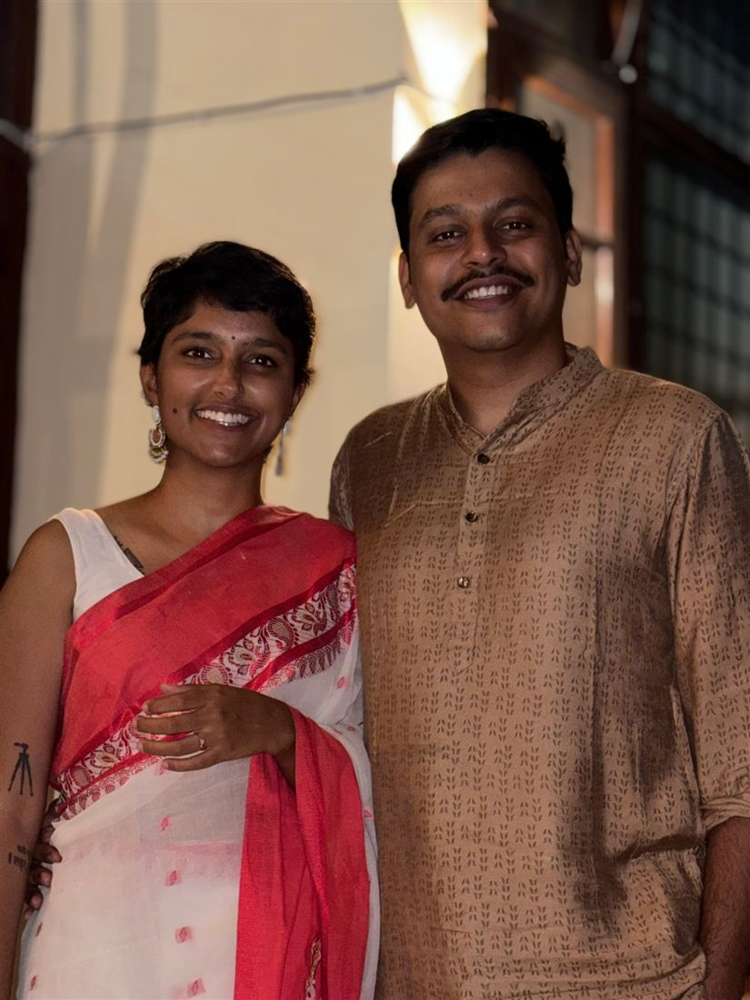
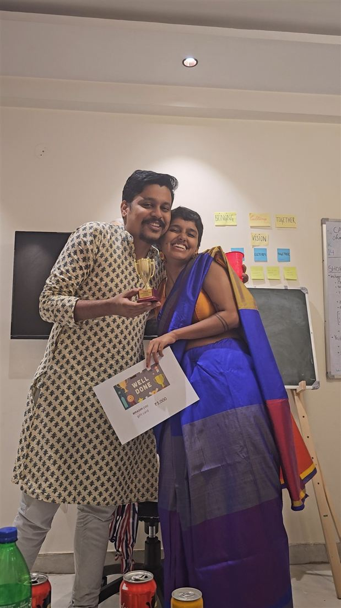
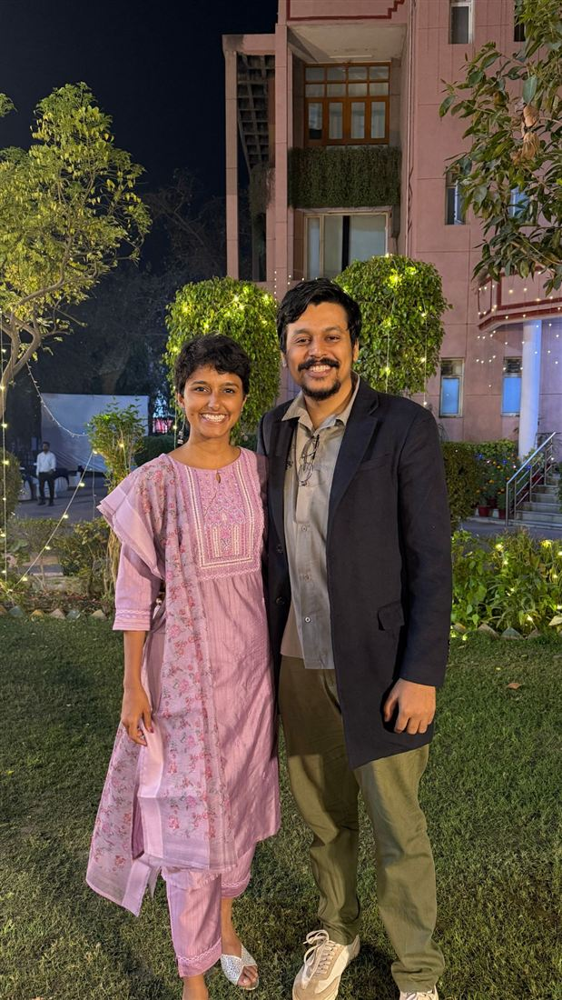
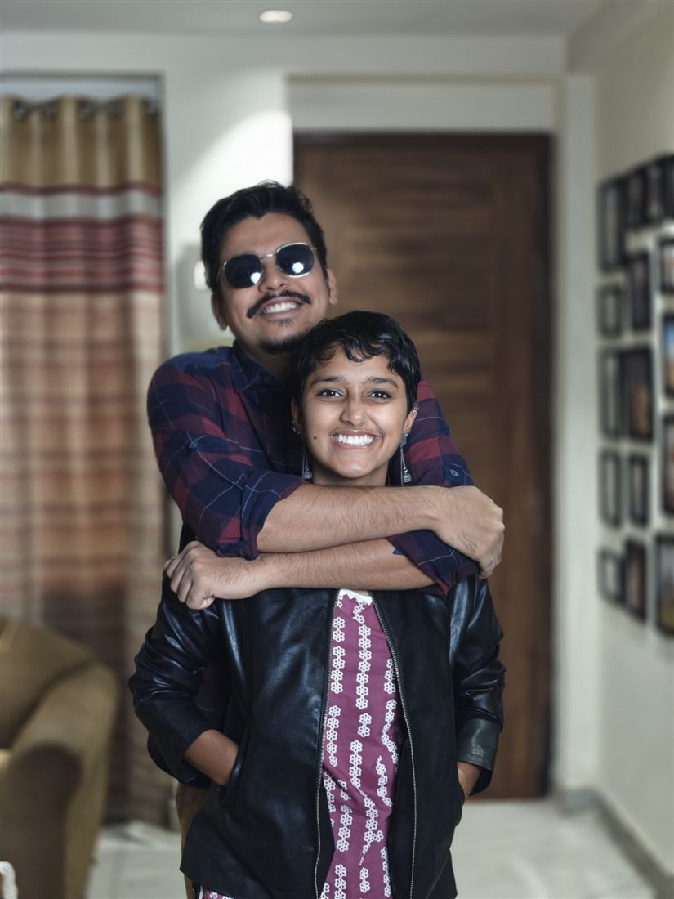
Har jagah ek kahani hai. Aapki bhi.
Four hours, one Sunday, and a way of telling stories you’ll use in every video after it.
Live on ZoomSun, 22 Nov · 12 to 4 PM IST
Anyone who wants people to watch their reels and videos till the end. New creators, people who already post, and anyone who has ideas but can’t turn them into stories.
No. We start from the basics. A phone is enough.
Everyone can join. Telling a story well helps in interviews, presentations and selling a product, not just in reels.
Storytelling works in any niche. We look at different creators and styles in the workshop, so you can find the one that suits yours. Faceless pages too: a story needs a problem and a payoff, not a face.
4 hours, live on Zoom, on Sunday, 22 November 2026, from 12 PM to 4 PM IST.
Yes. There are polls, quizzes, live chat and a Q&A with Varun and Kavya.
The recording and resources will be on learn.kkcreate.in within 24 hours of the live workshop. Sign in with the email or phone number you paid with.
Yes. After the workshop, share your feedback in writing, as a voice note or as a short video, and your certificate unlocks right away.
A phone or laptop with internet. The joining link comes to the email and WhatsApp number you paid with, before the session. Still stuck? WhatsApp us at +91 8700105418 or write to support@kkcreate.in.
We never promise that. We share what has worked for us.
Sunday, 22 November, 12 to 4 PM IST, live on Zoom.
Reserve my seat